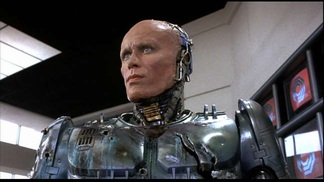
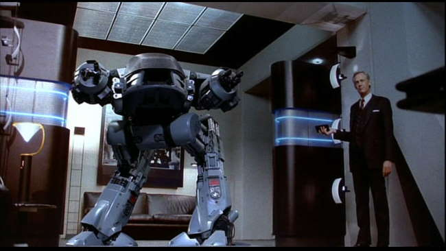
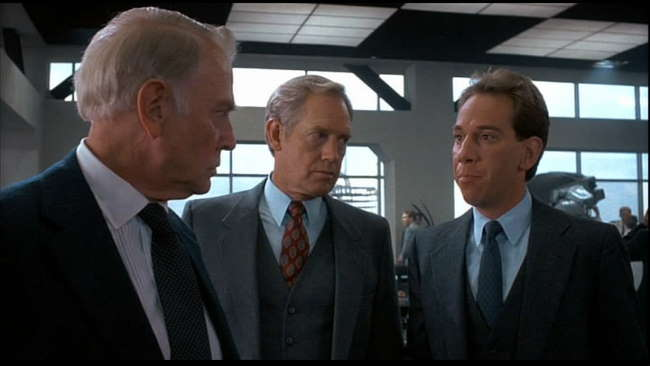
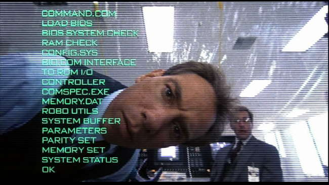
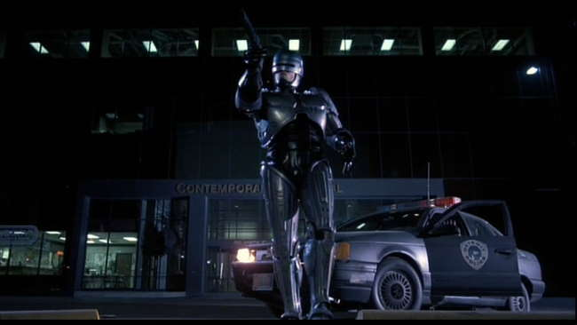
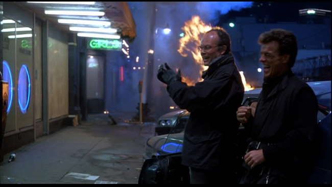
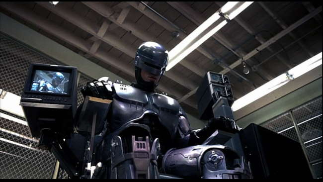
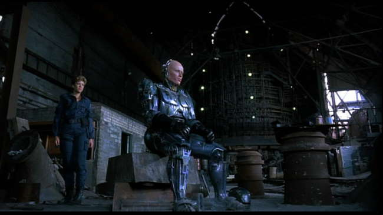
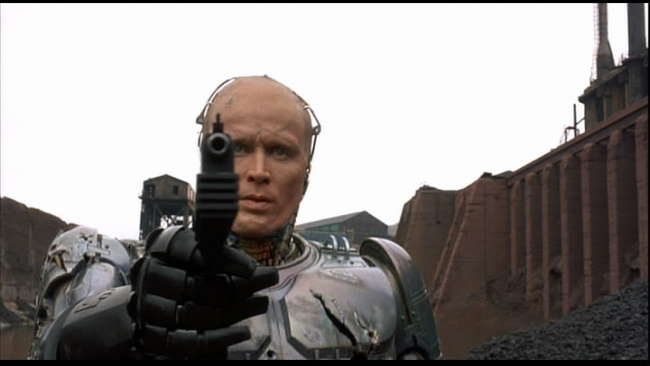

Movie review by : SFAM
Year : 1987
Directed by : Paul Verhoeven
Written by : Edward Neumeier & Michael Miner
Degree of Cyberpunk visuals : High
Correlation to Cyberpunk themes : Very High
Rating : 9/10
Key cast members :

Overview: One of the truly unique movies in the cyberpunk genre, Robocop seems to be slowly receding from our conscious. No longer (in the US) is it carried at places like Best Buy. This is truly a shame because Robocop offers us one of the best instances of near-future cyborgs on film, and in the process, raises some pretty interesting questions. One top of this, Robocop offers some really fun satire along with an in-your-face realistic violence tone throughout that only adds to its mood.

The Story: In a very near-future setting, general law and order has broken down. In the crime-ridden city of Detroit, Omni Consumer Products (OCP) has taken over the public safety duties. To cut costs, they have decided to explore options for automating the police force. One option supported by Dick Jones (Ronny Cox) the number 2 guy at OCP, involves the development of a fully automated mobile weapon system called "ED 209." While ED 209 is an absolute badass, it screws up in the final demo and ends up peppering one of OCP's employees in the process.

Enter up and coming executive, Bob Morton (Miguel Ferrer). Bob takes ED 209's demise as an opportunity to convince the CEO to give the Robocop project a try. This involves taking a "just-dead" cop, and embedding the key parts of his body (brain, lungs, heart, etc.) into a robotic body that interfaces and "controls" the mental processes through controlling prime directives. Detective Murphy (played wonderfully by Peter Weller), who has just died in a gruesome death at the hands of Detroit's crime lord (Kurtwood Smith) becomes the new "volunteer." His memory is erased, his limbs are removed, and then becomes OCP's corporate property as their latest innovation.

Murphy is transformed into a fully encased crime fighting machine. Robocop is released on the streets to start kicking ass. Unfortunately, Dick Jones doesn't take his defeat gracefully, and begins to cause trouble both for Robocop's creator, Bob Morton, and finally for Robocop. It turns out that OCP's plan for managing detroit's crime situation isn't all above board, as there appears to be some linkage between OCP and Detroit's crime lord. Robocop's troubles get even worse as he begins to remember who he was in a past life.

The Satire: Verhoeven is known for having an off-beat sense of satire. In a technique later used for Total Recall and Starship Troopers, Robocop does this primarily through its news reports and commercials. These, along with the corporate greed thematics transforms Robocop into a social commentary on the 80s excesses. The Commoditization of society permeates every aspect of human life in Robocop. Corporations are inherently evil and humanity is a cheap sales pitch. Like Starship Troopers, you'll continually catch yourself smiling at the commercials and news reports, as Verhoeven really has a talent for this type of satire.

The Violence: Fair warning ? Robocop is an extremely violent movie ? so much so that upon its initial release, they had to cut two seconds of violence to prevent from receiving an "X" rating. Nothing is held back here, as Verhoeven continually strives for hyper-realism. We see limbs getting blown off, blood spattered faces and walls, and in-your-face gore of all varieties from beginning to end. However, the violence doesn't stick out as a sore thumb ? instead it serves to give the near-future city a nourish realism feel. In short, it works within the context of the narrative and surrounding visuals.

The FX and Set Designs: While Verhoeven gives us a somewhat futuristic city, he seems to err on the side of looking "normal." We see this most clearly in the Ford Taurus police cars (which were brought in after everyone agreed the futuristic police car designs looked too tacky to be considered). However, the set designs are all wonderfully constructed, and all seem work well with one-another. The ED 209 looks terrific, and the stop-motion animation for it generally works. Robocop's exterior design does look hoaky at first, but you eventually get used to it. On the other hand, Robocop without his helmet looks flat-out awesome.

The Cyborg Questions: Robocop/Murphy give us a rich set of questions to ponder relating to cyborgs, the integration of programming with human minds, and in determining ownership after death.

The Bottom Line: Robocop has to be considered one of the essential films of the cyberpunk genre. Some of the action scenes could have been better choreographed (a lot of the bad-guy deaths had the worthless storm trooper feel to them), but truly, the quibbles with this film are minor. Unlike the sequels, which largely come across as pathetic attempts to cash in on the original's success, Robocop takes itself seriously from beginning to end. Because of this, it really does rise to something special. Even though Best Buy no longer considers Robocop worthy of carrying, don't let this fool you ? assuming you can stand the violence, Robocop deserves to be watched.